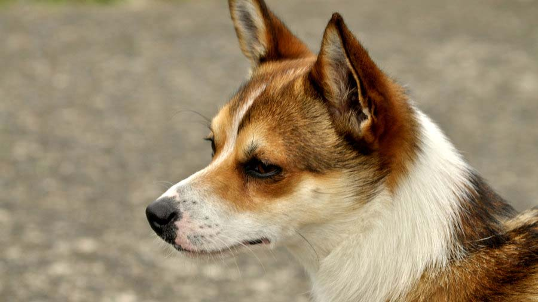

Norwegian Lundehund

origin
Norway
size
Small
color
Others
type
Purebred
breed group
Non Sporting (AKC:2011),Northern Breed (UKC)
character
Fluffy
temperament
Alert
Energetic
Loyal
Protective
height
12-15.5 inches (31-39 cm)
weight
13-20 pounds (6-9 kg)
geography
Europe
overview
The Norwegian Lundehund is a small and agile Spitz breed with several unique characteristics in combination not found in any other dog. Features such as six toes on each foot; prick ears that fold closed, forward or backward at will; and the ability to tip the head backward until it touches the back bone all helped them perform their job as Puffin hunter. Their dense coat ranges from fallow to reddish brown to tan in color, with black hair tips and white markings, or white with red or dark markings.
history
The Norwegian Lundehund is among the world's rarest of dogs. It is a member of the Spitz family. It originated in Vaerog and Rost in northern Norway. For centuries it was used to hunt puffins from nests on steep cliffs. Puffins, however, in the 1800s, became a protected species and were no longer hunted. The dogs were no longer useful to the farmers and the breed numbers dwindled. However, sometime after WWII the breed was saved from extinction through the friendship of two concerned Norwegians. The Norwegian Lundehund was not recognized as a distinct breed until 1943. The Norwegian Lundehund was first recognized by the AKC on July 1, 2011.